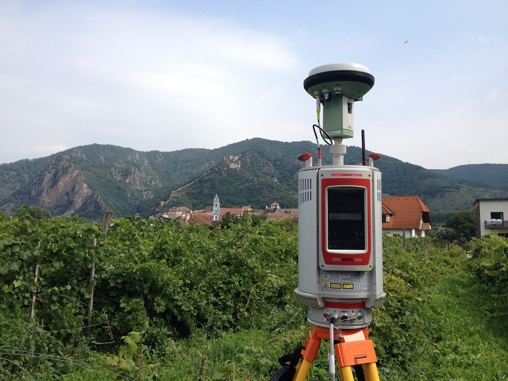
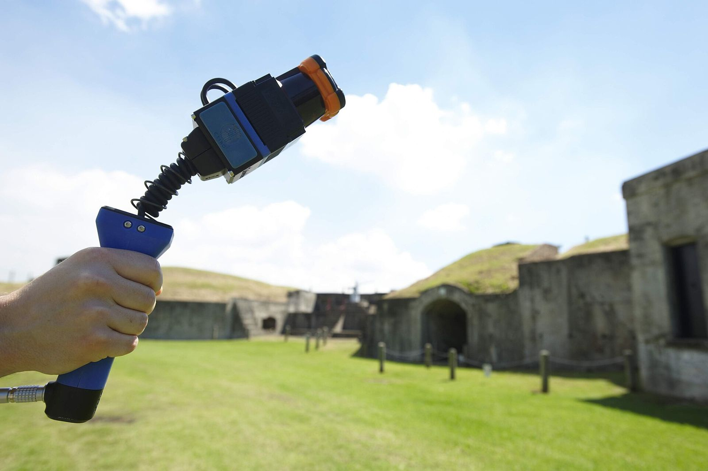
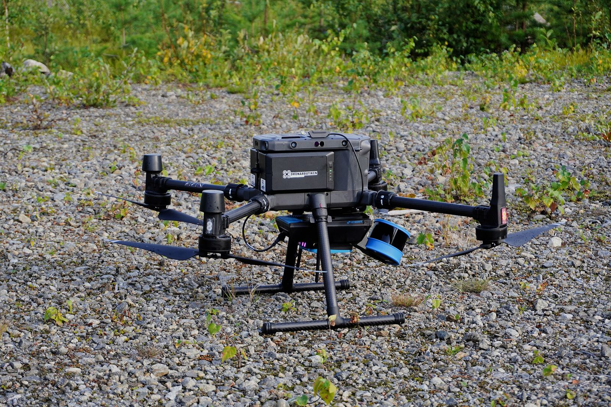
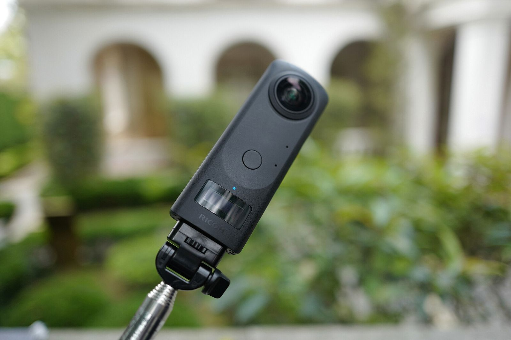

Reality Capture 도구 지형도
0. 이 문서가 정의하는 Reality Capture의 범위
전 산업을 훑되 건설·AEC 관점을 주 렌즈로 삼는다. 같은 장비라도 문화재 실측과 현장 공정 관리가 요구하는 정밀도와 회전 주기는 다르다. 판단이 갈리는 대목에서는 건설 현장 기준으로 정리했다.
포함하는 것은 실재하는 물리 공간이나 물체를 측정해 3차원 디지털 표현으로 바꾸는 기술 전반이다. 센서가 빛을 쏘아 거리를 재든(라이다), 여러 장의 사진에서 기하를 역산하든(사진측량), 결과물이 좌표를 가진 3차원 데이터라면 이 문서의 대상이다. 최근 등장한 NeRF·3D 가우시안 스플래팅처럼 측량보다 렌더링에 무게가 실린 계열도 입력이 현실 촬영물이므로 함께 다룬다.
제외한 것은 네 갈래다.
- 순수 설계 저작 도구. CAD·BIM 모델링 자체는 현실을 측정하지 않는다. 다만 취득 결과가 BIM으로 넘어가는 접점(Scan-to-BIM)은 다룬다.
- 산업 계측 전용 장비. CMM, 레이저 트래커처럼 마이크로미터급 공차를 다루는 제조 검사 영역은 정밀도 체계가 달라 따로 본다.
- 의료 영상. CT·MRI도 3차원 재구성이지만 인체 내부를 대상으로 하고 규제와 워크플로가 완전히 분리돼 있다.
- 분광 중심의 광학 위성 원격탐사. 2차원 영상 분석이 목적인 경우는 뺐다. 고도를 재는 위성 라이다는 포함한다.
이 범위 정의는 후속 문서(02-history.md, 03-use-cases.md, 04-adjacent-tech.md)가 참조할 기준선이다.
1. 읽는 법 — 출처 표기 규칙
수치마다 출처의 성격을 괄호로 붙였다.
- (벤더) — 제조사가 발표한 사양. 대개 최적 조건에서 측정한 값이다.
- (제3자) — 학술 논문, 독립 벤치마크, 공공기관 규격.
- (추정) — 뒷받침할 출처를 찾지 못한 서술. 참고만 할 것.
- (리셀러 호가) — 제조사가 아닌 판매 대리점이 게시한 가격. 지역과 시점에 따라 달라진다.
- (공시) — 기업이 규제기관에 제출한 공식 서류. 자사 문서지만 허위 기재에 법적 책임이 따른다.
가격은 특히 조심해야 한다. 측량 장비 제조사 대부분이 정가를 공개하지 않고 지역 대리점 견적으로 판매한다. 그래서 이 문서의 하드웨어 가격은 대체로 범위로 적고 (추정)을 붙였다. 소프트웨어는 공개 가격표가 있어 출처를 달 수 있었다.
2. 취득 방식 여덟 가지
2.1 사진측량 (Photogrammetry)
원리. 같은 지점을 서로 다른 각도에서 찍은 사진 여러 장에서 특징점을 찾아 대응시키고, 카메라 위치와 3차원 좌표를 동시에 역산한다. 이 과정을 SfM(Structure-from-Motion)이라 부르고, 이어서 MVS(Multi-View Stereo)로 조밀한 점군을 만든다. 오픈소스 COLMAP이 이 파이프라인의 사실상 기준 구현이다(COLMAP 공식 문서, 확인 2026-09-21).
정밀도. 거리에 비례해 오차가 커지는 라이다와 달리, 사진측량 정밀도는 촬영 거리와 중첩률, 지상기준점(GCP) 배치에 좌우된다. 조건이 좋으면 밀리미터급까지 가고 나쁘면 수십 센티미터로 벌어진다. 장비가 아니라 촬영 계획이 품질을 결정하는 방식이라고 보면 된다.
비용. 여덟 방식 중 진입 장벽이 가장 낮다. 카메라와 PC만 있으면 시작할 수 있고 COLMAP과 OpenDroneMap은 무료다. 대신 연산 시간으로 비용을 치른다.
한계. 질감 없는 흰 벽, 유리, 금속 광택면에서는 특징점이 잡히지 않아 구멍이 생긴다. 조명이 바뀌면 정합이 흔들린다. 스케일을 절대 좌표에 묶으려면 GCP나 RTK 측위가 따로 필요하다.
2.2 지상 고정식 라이다 (TLS, Terrestrial Laser Scanning)
원리. 삼각대에 올린 스캐너가 제자리에서 회전하며 레이저를 쏘고, 반사까지 걸린 시간이나 위상차로 거리를 잰다. 한 지점(station)에서 구형 시야를 통으로 얻고 여러 지점을 찍어 정합(registration)한다.

정밀도. 이 분야에서 가장 검증된 수치가 나오는 영역이다. Leica RTC360은 3차원 점 정확도를 10m에서 1.9mm, 20m에서 2.9mm, 40m에서 5.3mm로 명시한다(신뢰수준 68%, Leica RTC360 데이터시트, 확인 2026-09-21) (벤더). FARO Focus Premium은 10m에서 2mm, 25m에서 3.5mm를 제시한다(FARO Focus 기술 사양, 확인 2026-09-21) (벤더).
독립 검증도 있다. 그라츠 공대 연구진이 실험실에서 RTC360의 거리 측정 성능을 뜯어본 결과 거리 편차는 제조사 사양을 밑돌았다. 다만 약 1.3mm의 절대 오프셋이 관측됐고, 20m 지점에서 2mm 안팎의 불연속을 동반한 톱니 모양 패턴이 나타났다. 논문은 측정 잡음 사양을 비판적으로 봐야 한다고 못 박는다. 편차가 무작위도 아니고 정규분포도 아니기 때문이다(Sensors, 2024, 확인 2026-09-21) (제3자).
벤더 사양을 믿되 그 숫자가 뜻하는 바는 따로 읽어야 한다는 사례다.
비용. 측량급 TLS 본체 가격은 대체로 4천만~1억 원대다 (추정). 여기에 소프트웨어 유지보수와 삼각대·타깃 부속이 붙는다.
한계. 느리다. 지점마다 삼각대를 옮기고 세우는 시간이 실제 작업량을 지배한다. 가려진 곳은 찍히지 않으므로 지점을 늘려야 하고, 지점이 늘면 정합 오차가 누적된다.
2.3 모바일·핸드헬드 라이다 (SLAM 기반)
원리. 걸어 다니면서 스캔한다. 고정 기준점이 없으므로 SLAM(동시적 위치추정 및 지도작성)으로 센서 자신의 궤적과 주변 지도를 동시에 추정한다. 라이다 SLAM에 관성센서(IMU)와 비주얼 SLAM을 섞어 표류를 억제하는 구성이 일반적이다.

정밀도. TLS보다 한 단계 아래로 보는 편이 안전하다. 함부르크 HCU 연구진이 NavVis VLX 2와 VLX 3를 Z+F IMAGER 5016 TLS 기준으로 측정한 결과, 관제점 없이 평균 편차 6mm에 최대 18mm였고 관제점을 쓰면 평균 4mm에 최대 14mm였다(ISPRS Archives XLVIII-1/W6-2025, Kersten & Marsmann, 확인 2026-09-21) (제3자). 제조사 공표값은 점군 정확도 5mm다(NavVis VLX 3 사양, 확인 2026-09-21) (벤더).
관제점 유무가 정밀도를 가른다는 점이 핵심이다. 핸드헬드 장비를 측량 성과로 쓰려면 기준점 작업이 따라붙는다.
Trybala 등은 부분 붕괴된 지하 터널에서 저가 핸드헬드 SLAM 3종을 측량급 기준 점군과 비교했다. 논문은 장비마다 강점과 약점이 제각각이었다고 정리한다. 곧 하나로 다 되는 장비는 없다(ISPRS Archives XLVIII-1/W1-2023, Trybala 외, 확인 2026-09-21) (제3자).
비용. 3천만~7천만 원대 (추정). 영국 리셀러 G2 Survey는 Leica BLK2GO를 48,960파운드에 게시하고 있다(G2 Survey 판매 페이지, 확인 2026-09-21) (리셀러 호가).
한계. 표류가 본질적 약점이다. 긴 복도나 특징 없는 공간에서 SLAM이 붙잡을 단서가 사라지면 궤적이 휘고, 폐합(loop closure)을 못 잡으면 오차가 그대로 남는다. 시작점으로 되돌아오는 동선을 짜라는 권고가 나오는 이유다.
2.4 드론·UAV 항공촬영
원리. 두 갈래다. 드론에 카메라를 달아 사진측량을 하거나, 라이다 페이로드를 달아 직접 거리를 잰다. 후자는 GNSS/RTK와 IMU로 기체 자세를 기록해 점군을 지리좌표에 앉힌다.

정밀도. DJI Zenmuse L2는 고도 150m에서 수평 5cm, 수직 4cm를 제시한다. 다만 조건이 까다롭다. IMU 캘리브레이션 완료, RTK FIX 상태, 비행속도 15m/s, 짐벌 -90도, 항로 구간 1,500m 미만이라는 실험실 조건에서 측정한 값이다. 측거 정확도는 150m에서 2cm, 최대 측거는 450m다(DJI Zenmuse L2 사양, 확인 2026-09-21) (벤더).
사양서의 작은 글씨를 읽어야 하는 전형적인 예다. 현장 조건은 실험실과 다르다.
비용. 매핑용 기체와 라이다 페이로드를 묶으면 2천만~5천만 원대 (추정). 카메라만 쓰는 사진측량 구성은 수백만 원대로 내려간다 (추정).
한계. 기술보다 규제가 더 큰 제약이다. 비행 승인, 야간·비가시권 제한, 도심 상공 통제가 현장마다 걸린다. 실내에서는 GNSS가 끊겨 쓸 수 없고, 건물 입면처럼 수직인 면은 상공에서 잘 보이지 않는다.
2.5 360 파노라마 이미징
원리. 어안 렌즈 두 개로 구면 전체를 한 번에 담는다. 그 자체로는 3차원 데이터가 아니지만, 촬영 위치를 공간에 배치하고 파노라마를 연결하면 걸어 다니듯 둘러보는 기록이 된다. 여기에 사진측량이나 SLAM을 얹어 좌표를 부여하는 방식이 건설 현장에서 자리를 잡았다.

Cupix가 이 계열의 대표다. 작업자가 360 카메라를 들고 현장을 걸으면 카메라가 초당 두 장씩 찍고, CupixWorks가 이를 3차원 모델로 재구성한다. 결과물은 BIM 좌표계에 정렬돼 설계 모델과 나란히 비교된다(Cupix 제품 페이지, 확인 2026-09-21) (벤더). OpenSpace와 FARO Sphere XG(옛 HoloBuilder)가 같은 시장에서 경쟁한다(AEC Magazine, 확인 2026-09-21).
정밀도. 측량 성과로 쓸 정밀도는 아니다. 이 방식이 파는 값어치는 정밀도가 아니라 빈도다. 매주 현장을 한 바퀴 도는 비용이 낮아서 시간축 기록이 쌓인다.
비용. 카메라가 가장 싸다. Insta360 X5는 8K 360 영상을 찍고 렌즈를 교체할 수 있다(Insta360 X5 제품 페이지, 확인 2026-09-21) (벤더). Ricoh Theta Z1은 1인치 센서 두 개에 2,300만 화소로 정지 영상 화질에 강하다(B&H 비교 페이지, 확인 2026-09-21). 실제 비용은 하드웨어가 아니라 플랫폼 구독에서 발생한다 (추정).
한계. 깊이 정보가 약하다. 좁은 공간이나 반복 패턴이 많은 구간에서는 위치 추정이 흔들린다. 치수를 다투는 용도로는 부적합하다.
2.6 구조광·ToF 스캐너
원리. 구조광은 알려진 패턴을 대상에 투사하고 그 패턴이 어떻게 일그러지는지 관측해 형상을 계산한다. ToF(Time-of-Flight)는 빛이 왕복한 시간을 직접 잰다. 둘 다 근거리 소형 대상에 최적화돼 있다.
정밀도. 근거리에서는 이 방식이 가장 정밀하다. Artec Leo는 3차원 점 정확도 0.1mm, 해상도 0.2mm, 작업 거리 0.35~1.2m를 제시한다(Artec Leo 제품 페이지, 확인 2026-09-21) (벤더).
스마트폰 라이다는 완전히 다른 층위다. Luetzenburg 등이 iPhone 12 Pro를 시험한 결과 최대 측거는 5m, 소형 물체 형상은 절대 정확도 1cm에 정밀도 오차 1cm 수준이었다. 130×15×10m 해안 절벽을 ±10cm 정확도로 재구성했고 탐지 한계는 약 5cm였다(Scientific Reports, 2021, 확인 2026-09-21) (제3자).
논문이 짚은 흥미로운 대목이 있다. 라이다는 센서에 비스듬한 면도 점군을 만들어내는 반면 사진측량은 촬영면이 어느 정도 정면이어야 한다. 정밀도는 낮아도 취득 성공률에서 앞서는 구간이 있다.
비용. 산업용 핸드헬드는 2천만~5천만 원대 (추정). 스마트폰 라이다는 이미 가진 기기에 앱만 얹으면 된다.
한계. 측거가 짧다. 건물 한 동을 이 방식으로 뜨는 건 현실적이지 않다. 강한 햇빛 아래에서 구조광 패턴이 묻히는 문제도 있다. 같은 기기라도 스캐닝 앱에 따라 결과가 달라진다는 지적이 있으나, 원문을 열지 못해 수치를 확인하지 못했다 (추정).
2.7 항공·위성 라이다
원리. 항공기나 위성에 라이다를 싣고 넓은 지역을 훑는다. 국토 단위 지형 데이터가 이 방식에서 나온다.
정밀도. 미국 USGS의 3DEP(3D Elevation Program)가 품질 등급을 규격으로 정해뒀다. QL1은 공칭 펄스 간격 0.35m 이하에 밀도 8점/m2 이상, QL2는 0.71m 이하에 2점/m2 이상이다. 수직 정확도(RMSEz)는 두 등급 모두 10cm이며 3DEP 수집의 최소 허용 등급은 QL2다(USGS 지형 데이터 품질 등급, 확인 2026-09-21) (제3자·공공규격).
위성 라이다는 해상도가 또 한 단계 내려간다. NASA ICESat-2(ATLAS)와 GEDI는 2018년 발사됐고 GEDI Level 2A는 지름 25m 원형 풋프린트를 쓴다. 두 미션의 지형 고도 추정 오차는 대체로 1m 미만이나 열대림에서는 벌어진다(Remote Sensing, 2024, 확인 2026-09-21) (제3자).
비용. 항공 라이다 취득은 면적 단위 용역으로 발주된다. 위성 데이터는 상당 부분 공개돼 무료로 받을 수 있다.
한계. 건설 현장 단위에서 쓰기에는 해상도가 턱없이 성기다. 이 방식의 값어치는 광역 맥락과 초기 지형에 있다. 재촬영 주기가 길어 공정 관리에는 맞지 않는다.
2.8 NeRF·3D 가우시안 스플래팅
원리. 앞의 일곱 방식이 점이나 면을 측정한다면, 이 계열은 장면을 렌더링 함수로 학습한다. NeRF는 위치와 시선 방향을 넣으면 밀도와 색을 뱉는 신경망으로 장면을 표현한다(Mildenhall 외, ECCV 2020, 확인 2026-09-21) (제3자).
3D 가우시안 스플래팅(3DGS)은 신경망 대신 수백만 개의 3차원 가우시안을 명시적으로 배치하고 최적화한다. 실시간 렌더링(30fps 이상)을 달성하면서 화질을 유지한 점이 전환점이었다(Kerbl 외, ACM TOG 42(4), SIGGRAPH 2023, 확인 2026-09-21) (제3자).
정밀도. 시각적 사실성과 기하 정확도는 반드시 따로 봐야 한다. 눈으로 보기에 사진 같다고 해서 치수를 믿을 근거가 되지는 않는다. 측량 성과로 쓰려면 별도 검증이 필요하다 (추정).
비용. 도구는 빠르게 저렴해졌다. Postshot(Jawset)은 윈도우 데스크톱에서 SfM부터 학습과 내보내기까지 로컬로 돌린다. Polycam은 2024년 가우시안 스플래팅을 추가했고 Luma AI는 모바일 촬영과 클라우드 처리를 묶었다(Swyvl 도구 비교, 확인 2026-09-21). 실질 비용은 GPU 시간이다.
한계. 아직 신생 기술이라 표준과 검증이 따라오는 중이다. 다만 2026년 들어 제도화가 빠르게 진행됐다. 6절에서 이어 다룬다.
3. 한눈에 보는 비교표
정밀도는 같은 조건에서 서로 비교한 값이 아니다. 각 방식의 대표 사용 조건에서 나온 수치이므로 절대 비교표가 아니라 자릿수 감각을 잡는 용도로 읽어야 한다.
| 방식 | 대표 제품 | 상대 정밀도 | 취득 속도 | 대략적 비용대 | 주 용도 |
|---|---|---|---|---|---|
| 사진측량 | RealityScan(옛 RealityCapture), Metashape, COLMAP | 조건 의존, mm~수십 cm (추정) | 촬영은 빠르고 연산이 길다 | SW 무료~연 1,250달러 (벤더) | 입면, 문화재, 드론 매핑 |
| 지상 고정식 라이다(TLS) | Leica RTC360, FARO Focus Premium, Trimble X9 | 10m에서 1.9~2mm (벤더), 실험실 검증상 사양 이내 (제3자) | 지점당 수 분, 이동이 병목 | 4천만~1억 원 (추정) | 준공 실측, 정밀 Scan-to-BIM |
| 모바일·핸드헬드 라이다 | Leica BLK2GO, NavVis VLX 3, Emesent Hovermap ST-X | 평균 6mm, 최대 18mm(관제점 없음) (제3자) | 걷는 속도, 방식 중 가장 빠름 | 3천만~7천만 원 (추정) | 넓은 실내, 지하, 반복 점검 |
| 드론·UAV | DJI Zenmuse L2 + Matrice | 150m에서 수평 5cm, 수직 4cm(실험실 조건) (벤더) | 비행 1회로 수십 ha | 2천만~5천만 원 (추정) | 토공량, 광역 현황, 지붕·입면 |
| 360 파노라마 이미징 | Cupix, OpenSpace, FARO Sphere XG, Insta360 X5 | 측량급 아님, 위치 기록 수준 (추정) | 현장 한 바퀴, 방식 중 최속 | 카메라 수십만 원 + 플랫폼 구독 (추정) | 공정 기록, 원격 확인, BIM 대비 |
| 구조광·ToF | Artec Leo, iPhone·iPad 라이다 | 0.1mm (벤더), 스마트폰 약 1cm (제3자) | 소형 대상 수 분 | 2천만~5천만 원, 스마트폰은 내장 (추정) | 소형 부재, 설비, 간이 실측 |
| 항공·위성 라이다 | 항공 라이다 측량, ICESat-2, GEDI | RMSEz 10cm(3DEP QL1/QL2) (제3자), 위성 1m 미만 (제3자) | 광역 1회, 재촬영 주기 김 | 면적 단위 용역, 위성은 상당수 무료 (추정) | 국토 지형, 광역 맥락 |
| NeRF·3DGS | Postshot, Polycam, Luma AI | 시각 품질과 기하 정확도가 분리됨 (추정) | 촬영은 짧고 학습에 GPU 시간 | 도구 무료~중저가 + GPU (추정) | 시각화, 합의 형성, 프레젠테이션 |
표의 수치는 2절 각 방식 항목을 요약한 것이며, 출처 URL과 확인 날짜는 해당 항목에 달려 있다.
4. 하드웨어 제품군 정리
Leica Geosystems. 고정식 RTC360과 BLK360 G2, 핸드헬드 BLK2GO로 층위를 나눠 놨다. BLK360 G2는 측거 0.6~60m에 정확도 4mm, BLK2GO는 초당 42만 점에 측거 0.5~25m, 노이즈 ±3mm다(Leica BLK2GO 제품 페이지, 확인 2026-09-21) (벤더).
FARO. Focus 계열이 주력이다. Focus Premium은 90% 반사 기준 200m, Premium Max는 400m, Core는 100m로 측거를 나눴다(FARO Focus 기술 사양, 확인 2026-09-21) (벤더). FARO는 2022년 9월 영국 GeoSLAM을 인수하며 모바일 스캐닝으로 발을 넓혔다. 총 인수 대가는 현금과 주식을 합쳐 4,490만 달러였다(FARO 10-K, FY2022, 확인 2026-09-21) (공시). HoloBuilder를 품은 Sphere XG까지 더해 하드웨어부터 현장 기록 플랫폼까지 묶는 그림이다.
Trimble. X9는 정확도 2mm 수준, 측거 150m, 초당 100만 점이고 자동 수평과 자동 캘리브레이션을 갖췄다(Trimble X9 제품 페이지, 확인 2026-09-21) (벤더). 측량 워크플로와의 결합이 강점이다.
NavVis. VLX 3는 착용형 모바일 매핑에 집중한다. 32채널 라이다 두 개를 새로 설계해 노이즈와 표류를 줄였다고 밝힌다(NavVis VLX 3 사양, 확인 2026-09-21) (벤더). 실내 대면적이 주 전장이다.
Emesent. Hovermap ST-X는 측거 300m에 초당 100만 점 이상을 낸다. 일반 환경 ±15mm, 실내와 지하에서 ±10mm를 제시하고, 드론 탑재와 핸드헬드, 차량, 배낭으로 형태를 바꿔 쓸 수 있다(Emesent Hovermap 제품 페이지, 확인 2026-09-21) (벤더). 광산과 지하 공간에서 강하다.
DJI. Zenmuse L2가 라이다 페이로드의 대중적 기준선이 됐다. 프레임 라이다와 고정밀 IMU, 4/3 CMOS 매핑 카메라를 묶었다(DJI Zenmuse L2 사양, 확인 2026-09-21) (벤더).
Matterport. Pro3는 10m에서 거리 정확도 ±20mm, 스캔당 20초 미만, 초당 10만 점을 제시한다. Matterport 자체 모델에서는 측거 20m지만 E57로 내보낼 때는 100m까지 담는다(Matterport Pro3 스토어, 확인 2026-09-21) (벤더). 부동산에서 출발해 AEC로 무게를 옮겨온 제품이다.
360 카메라. Insta360 X5와 Ricoh Theta Z1이 현장에서 가장 흔하다. 두 제품 모두 Reality Capture 전용 장비가 아니지만 플랫폼과 묶이면서 사실상 표준 입력 장치가 됐다.
스마트폰. iPhone과 iPad Pro의 라이다는 정밀도를 다투는 장비가 아니라 접근성을 바꾼 장비다. 현장 누구나 주머니에 스캐너를 넣고 다니게 됐다는 사실 자체가 변화다.
5. 소프트웨어 지형도
사진측량 엔진
RealityScan(옛 RealityCapture). 이름이 바뀌었으니 주의해야 한다. Epic Games는 2025년 6월 4일 데스크톱 RealityCapture를 RealityScan 2.0으로 리브랜딩한다고 알렸다. 모바일 앱과 브랜드를 통합하려는 조치였고, AI 기반 마스킹과 매끈한 표면의 정합 개선, 커버리지 부족 구간을 히트맵으로 보여주는 품질 분석 도구, 항공 라이다 지원이 함께 들어갔다(CG Channel, 2025-06, 확인 2026-09-21). 2025년 11월에는 2.1이 나왔다.
가격 정책도 2024년 4월에 한 번 크게 바뀌었다. 연 매출 100만 달러 미만이면 무료, 그 이상이면 좌석당 연 1,250달러다(Epic Games 공지, 확인 2026-09-21) (벤더).
Agisoft Metashape. 영구 라이선스 방식이다. Professional이 3,499달러, Standard가 179달러이며 교육용은 각각 549달러와 59달러다(Agisoft 온라인 스토어, 확인 2026-09-21) (벤더). 윈도우와 맥, 리눅스를 모두 지원한다. 파이프라인 단계를 세밀하게 통제하려는 쪽이 고른다.
Pix4D. 구독 중심이다. PIX4Dmapper는 연 3,990달러 안팎이고 측량과 농업, 건설용 템플릿 워크플로를 갖췄다 (벤더). 가이드가 잘 잡힌 대신 자유도는 낮다(Vagon 비교 글, 확인 2026-09-21).
오픈소스. COLMAP이 SfM/MVS의 기준 구현이고, OpenDroneMap은 OpenSfM으로 카메라 자세를 풀고 OpenMVS로 조밀화하는 항공 사진측량 파이프라인이다(ODM 저장소의 OpenMVS 단계 코드, 확인 2026-09-21). 비용은 없고 학습 곡선이 비용이다. COLMAP의 파이프라인, 산출물, 한계는 심층 문서 01-tools/colmap.md에 따로 정리했다.
점군 처리와 플랫폼
Autodesk ReCap Pro. 점군 정리와 Autodesk 생태계 연결이 본령이다. 레이저 스캔과 사진에서 3차원 모델을 만들고, 클라우드 서비스인 ReCap Photo가 드론이나 카메라 사진에서 점군과 메시, 정사영상을 생성한다(Autodesk ReCap Pro 제품 페이지, 확인 2026-09-21) (벤더).
Bentley iTwin Capture. ContextCapture가 iTwin Capture Modeler로 이름이 바뀌었다. 사진과 점군에서 엔지니어링용 리얼리티 메시, 정사영상, 수치표면모델을 생성한다(Bentley 제품 페이지, 확인 2026-09-21) (벤더). 인프라 디지털 트윈 쪽에 맞춰져 있다.
이름이 바뀐 제품이 두 개나 된다는 점은 그 자체로 기록해 둘 만하다. 3년쯤 지난 자료를 읽을 때 제품명으로 검색하면 헛다리를 짚기 쉽다.
Cupix. 360 영상 입력에서 3차원 디지털 트윈을 만들고 BIM과 정렬한다. SiteInsights는 컴퓨터 비전과 기하 정보로 캡처 간 변화를 자동 검출해 공정률을 산출한다(Cupix 제품 페이지, 확인 2026-09-21) (벤더). 다른 장비로 취득한 점군을 가져올 수도 있다. 경쟁 상대는 OpenSpace와 FARO Sphere XG다.
Matterport. 하드웨어와 클라우드 플랫폼을 한 묶음으로 파는 구조다.
NeRF와 3DGS 도구
Postshot은 로컬 처리, Polycam은 모바일과 웹, Luma AI는 클라우드 중심이다. 셋 다 코드를 쓰지 않고 결과를 뽑을 수 있는 수준까지 내려왔다.
6. 데이터 포맷과 상호운용
도구를 고르는 일은 결국 데이터를 어디로 넘길 수 있는가의 문제로 돌아온다.
E57. ASTM E57 위원회가 만든 벤더 중립 교환 포맷이며 표준 번호는 ASTM E2807이다. XML과 바이너리를 섞은 구조에 3차원 좌표, 점별 속성(RGB, 강도, 반사율), 보정된 파노라마 영상, 스캔 지점별 자세 행렬을 한 파일에 담는다(Huber, E57 포맷 논문, CMU, 확인 2026-09-21) (제3자). 스캐너 제조사들이 자사 취득 포맷을 따로 두고 E57은 내보내기 단계에서 쓰는 관행이 굳어져 있다 (추정). 태생이 교환용이다.
LAS와 LAZ. ASPRS가 2003년에 만들었고 현재 1.4 R15(2019)가 기준이다(미 의회도서관 포맷 기술서, 확인 2026-09-21) (제3자). 항공 측량과 임업, 회랑 모델링에서 사실상 표준이다. LAZ는 LAS를 무손실 압축한 것이다. 기하 중심이라 스캔 자세나 파노라마는 담지 않는다.
E57은 지상 스캔 교환용, LAS와 LAZ는 항공과 광역용으로 갈린다.
RCP와 RCS. Autodesk ReCap의 고유 포맷이다. Autodesk 생태계 안에서는 빠르고 편하지만 밖으로 나가는 순간 벽이 된다. 납품 규격을 정할 때 이 점을 미리 합의해 두는 편이 낫다 (추정).
IFC. buildingSMART의 개방형 BIM 스키마다. 점군 자체를 담는 포맷이 아니라 Scan-to-BIM 결과물이 도착하는 목적지에 가깝다. 인프라 자산을 다루는 IFC 4.3이 나오면서 도로와 교량 쪽 적용이 열렸다(ARKANCE 정리, 확인 2026-09-21).
OGC 계열. 대용량 3차원 데이터를 웹으로 흘려보내는 표준군이다. 3D Tiles는 건물과 지형, 점군의 스트리밍과 시각화를 다룬다(OGC 3D Tiles, 확인 2026-09-21). I3S는 모바일과 웹, 데스크톱 클라이언트로 대용량 3D GIS 데이터를 스트리밍하는 OGC 커뮤니티 표준이며 현재 1.3 버전(OGC 문서 17-014r9)이다(OGC I3S 표준 페이지, 확인 2026-09-21) (제3자·표준).
USD와 glTF. 저작과 교환은 USD, 배포와 전달은 glTF라는 역할 분담이 굳어지는 중이다. AOUSD와 Khronos가 연락 협정을 맺고 두 생태계를 정렬하기로 했으며, AOUSD는 2025년 말 코어 명세 최종 승인을 목표로 삼았다(Khronos 블로그, 확인 2026-09-21).
가우시안 스플래팅의 제도화. 2026년 2월 3일 Khronos가 KHR_gaussian_splatting 확장을 발표했다. glTF 2.0 파일 안에 가우시안 스플랫의 위치와 방향, 크기, 색, 불투명도를 저장하고 렌더링 해석 규칙을 정한다. 지원하지 않는 뷰어에서는 점군으로 폴백하며 메시나 지형 자산과 한 장면에 공존할 수 있다. CesiumJS, Esri ArcGIS, Niantic Spatial의 Scaniverse, XGRIDS Lixel Cybercolor가 릴리스 후보를 구현 중이고 비준은 2026년 2분기로 예정돼 있다(Khronos 보도자료, 확인 2026-09-21) (제3자·표준).
연구 단계 기술이 표준 확장으로 들어오는 데 3DGS 논문 발표(2023년 7월)부터 약 2년 반이 걸렸다. 2.8절에서 미뤄둔 이야기가 여기서 닫힌다.
7. 지형도를 읽고 나서 남는 것
조사하며 반복해서 확인한 것을 네 가지로 추린다.
하나. 정밀도 수치는 조건과 함께 읽어야 한다. DJI L2의 5cm는 실험실 조건값이고 NavVis VLX 3의 5mm는 500제곱미터 전용 시험 환경에서 나왔다. RTC360을 실험실에서 뜯어본 논문은 사양을 충족한다고 결론 내리면서도 잡음 사양의 표현 방식을 문제 삼았다. 사양서는 출발점이지 결론이 아니다.
둘. 관제점이 정밀도를 가른다. NavVis 연구에서 관제점 유무가 평균 6mm와 4mm, 최대 18mm와 14mm를 갈랐다. 장비 등급을 올리는 것보다 기준점 작업을 제대로 하는 편이 나은 경우가 있다.
셋. 한 방식으로 끝나는 현장은 없다. TLS는 정밀하지만 느리고, 핸드헬드는 빠르지만 표류하며, 360은 값싸지만 치수를 못 재고, 드론은 넓지만 실내에 못 들어간다. 지하 터널에서 핸드헬드 3종을 비교한 논문이 장비마다 고유한 강약점이 있다고 결론 낸 것도 같은 맥락이다. 도구 선택은 조합의 문제다.
넷. 제품명과 소유 구조가 빠르게 바뀐다. ContextCapture는 iTwin Capture가 됐고, RealityCapture는 RealityScan이 됐으며, GeoSLAM과 HoloBuilder는 FARO 안으로 들어갔다. 자료를 읽을 때 날짜를 먼저 확인해야 하는 이유다.
도구 심층 문서
개별 도구를 깊게 다룬 문서는 docs/01-tools/ 아래에 둔다. 이 문서는 그 인덱스를 겸한다.
| 문서 | 다루는 것 | 작성일 |
|---|---|---|
| COLMAP | 오픈소스 SfM·MVS 기준 구현. 파이프라인, 산출물 규약, 4.x 변화(전역 매퍼, 360 카메라), 3DGS 생태계, 한계 | 2026-10-07 |
용어 후보
00-glossary.md에 올릴 후보다. 정의는 용어집에서 확정한다.
- Reality Capture — 실재하는 공간이나 물체를 측정해 3차원 디지털 표현으로 바꾸는 기술 전반 — 이 문서 0절
- 사진측량(Photogrammetry) — 서로 다른 각도의 사진 여러 장에서 3차원 기하를 역산하는 측량 기법 — https://colmap.github.io/
- SfM(Structure-from-Motion) — 영상 집합에서 카메라 자세와 희소 3차원 구조를 동시에 복원하는 절차 — https://colmap.github.io/
- MVS(Multi-View Stereo) — SfM 결과를 받아 조밀한 점군을 생성하는 후속 단계 — https://colmap.github.io/
- TLS(Terrestrial Laser Scanning) — 삼각대에 고정한 스캐너로 제자리 회전하며 취득하는 지상 라이다 — https://leica-geosystems.com/-/media/files/leicageosystems/products/datasheets/leica-rtc360-ds.ashx
- SLAM — 센서 자신의 위치와 주변 지도를 동시에 추정하는 기법 — https://knowledge.navvis.com/docs/navvis-vlx-3-specifications
- 정합(Registration) — 서로 다른 지점에서 취득한 점군을 하나의 좌표계로 합치는 작업 — https://pmc.ncbi.nlm.nih.gov/articles/PMC11207371/
- 표류(Drift) — SLAM 추정 궤적이 시간이 갈수록 실제에서 벗어나는 누적 오차 — https://isprs-archives.copernicus.org/articles/XLVIII-1-W1-2023/517/2023/
- 폐합(Loop Closure) — 이미 지난 곳으로 되돌아온 것을 인식해 누적 오차를 보정하는 SLAM 절차 — https://isprs-archives.copernicus.org/articles/XLVIII-1-W1-2023/517/2023/
- GCP(지상기준점) — 좌표를 아는 지상 표적으로, 취득 결과를 절대 좌표에 고정하는 기준 — https://enterprise.dji.com/zenmuse-l2/specs
- ToF(Time-of-Flight) — 빛의 왕복 시간을 재어 거리를 구하는 방식 — https://pmc.ncbi.nlm.nih.gov/articles/PMC8593014/
- 구조광(Structured Light) — 알려진 패턴을 투사하고 그 일그러짐을 관측해 형상을 계산하는 방식 — https://www.artec3d.com/portable-3d-scanners/artec-leo
- NeRF(Neural Radiance Fields) — 장면을 신경망 기반 연속 체적 함수로 표현해 새로운 시점을 합성하는 기법 — https://dl.acm.org/doi/abs/10.1007/978-3-030-58452-8_24
- 3DGS(3D Gaussian Splatting) — 수백만 개의 3차원 가우시안으로 장면을 명시적으로 표현해 실시간 렌더링하는 기법 — https://repo-sam.inria.fr/fungraph/3d-gaussian-splatting/
- E57(ASTM E2807) — 3차원 이미징 데이터 교환을 위한 벤더 중립 표준 포맷 — https://www.ri.cmu.edu/pub_files/2011/1/2011-huber-e57-v3.pdf
- LAS / LAZ — ASPRS가 정한 라이다 점군 바이너리 포맷과 그 무손실 압축본 — https://www.loc.gov/preservation/digital/formats/fdd/fdd000418.shtml
- IFC — buildingSMART의 벤더 중립 개방형 BIM 데이터 스키마 — https://arkance.world/gb-en/resources/read/blogs/buildingsmart-ifc-ids-open-bim-standards
- Scan-to-BIM — 취득한 점군을 의미를 가진 객체 기반 BIM 모델로 변환하는 작업 — https://arkance.world/gb-en/resources/read/blogs/buildingsmart-ifc-ids-open-bim-standards
- 3D Tiles — 대규모 3차원 공간 데이터의 스트리밍과 시각화를 위한 OGC 표준 — https://www.ogc.org/standards/3dtiles/
- I3S(Indexed 3D Scene Layers) — 대용량 3차원 콘텐츠의 스트리밍과 저장을 위한 OGC 커뮤니티 표준 — https://www.ogc.org/announcement/new-version-of-3d-streaming-community-standard-i3s-adopted-and-published-by-ogc/
- 품질 등급(QL, Quality Level) — USGS 3DEP이 정한 라이다 점밀도와 수직정확도 등급 체계 — https://www.usgs.gov/3d-elevation-program/topographic-data-quality-levels-qls